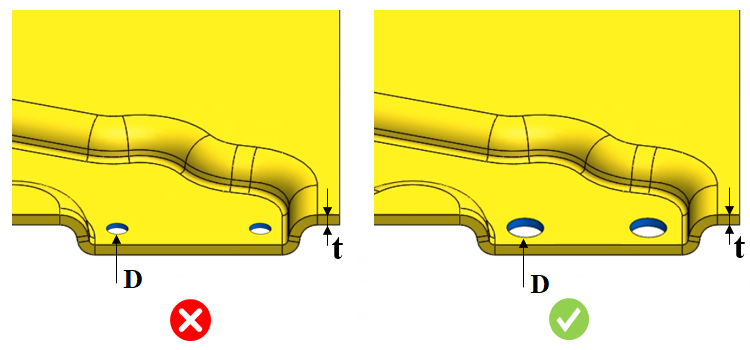

推奨される穴径と板厚の比率は、ユーザーが指定した値の範囲内である必要があります。
小径穴や細長い穴を打ち抜く際、横方向の力によってパンチ先端が曲がったりたわんだりする場合があります。これにより、パンチが曲がった側でパンチとダイのクリアランスが小さくなります。このような傾いたパンチによる過度に小さいクリアランスは、工具やダイを損傷させます。板厚および材料に基づいて最小穴径を維持することで、工具破損の問題を解消できます。
最小穴径は、材料および板厚に基づいて適切に設定する必要があります。パンチ先端を案内し、パンチの横方向の動きを防止するフルガイド式ストリッパを使用することで、正確な打ち抜きを確保し、工具寿命を延ばすことができます。
ユーザーは Map Material から加工材料を設定し、対応する穴径と板厚の比率を構成できます。ルール実行時に、DFMPro は最小穴径を特定し、事前に設定された値と比較して穴径と板厚の比率を算出します。
ルール UI では、材料の一覧が Materials Database から読み込まれます。ユーザーは材料およびそれに関連する値を設定できます。材料グループ内では、材料グレードはアルファベット順に並び替えられます。材料グループが選択されている場合、DFMPro は材料グループ全体で一貫した比率を維持したまま解析を実行します。

ここでは、
D = 穴径
t = 板金の板厚
注記:
このルールは、単純穴（Simple Holes）のみに適用されます。